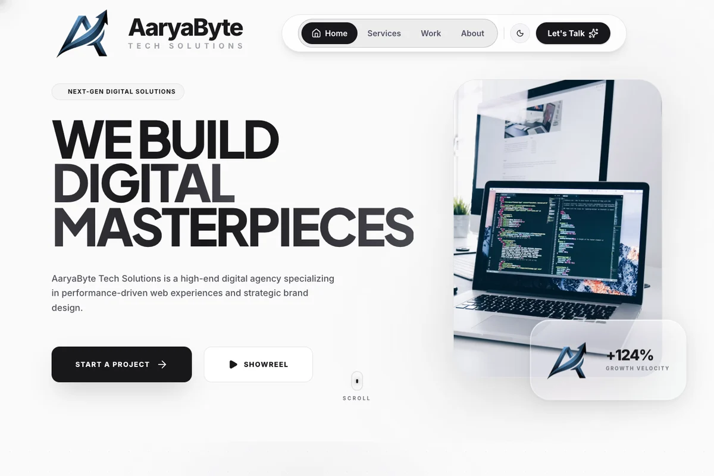
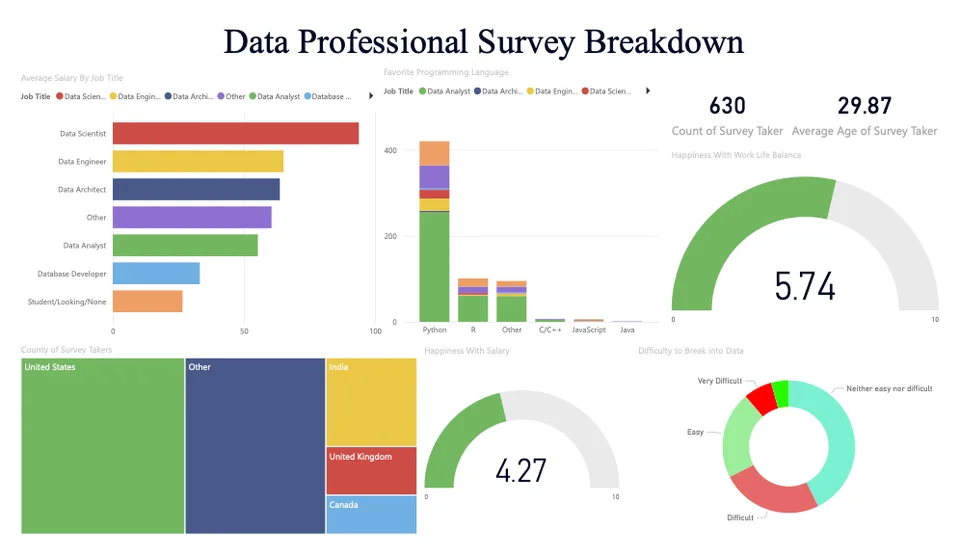

LIVE CLIENT WORK / 01From interface to conversation
Built to be used, not just viewed.
I built the complete AaryaByte and Pristinee Industries websites, including their backends and live messaging links. Visit either site to experience the public work directly.
Full websiteBackendMessaging links

DATA EXPLORATION / 02From raw information to a useful view
Find the signal in the details.
My data projects move between SQL cleaning and visual analysis in Power BI and Tableau. Open the projects to see the actual files and the questions they explore.
SQLPower BITableau
>_input → logic → result
LIVE BROWSER TOOLS / 03From code to interaction
Put the work to the test.
Try browser versions of three programming projects: calculate BMI, estimate hourly pay, or transform text with a cipher. Enter your own values and see the result immediately.
BMI calculatorPay estimatorText cipher